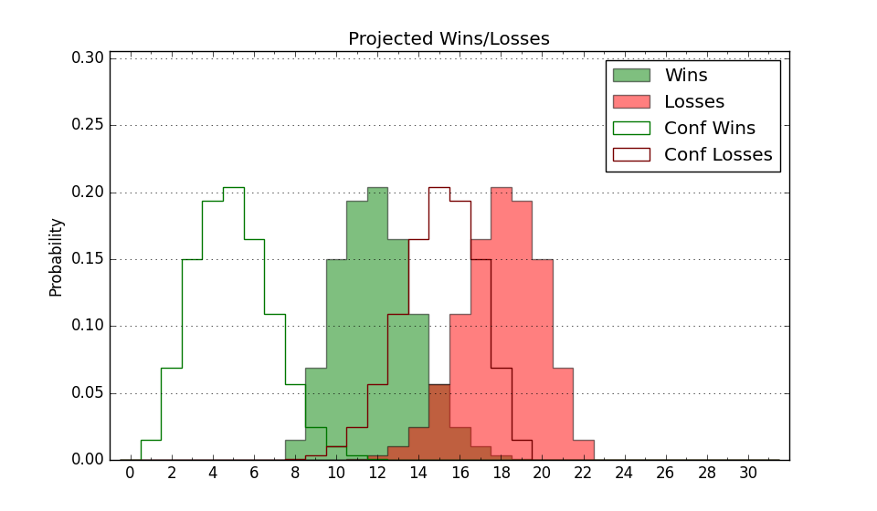

| Home | Game Probabilities | Conferences | Preseason Predictions | Odds Charts | NCAA Tournament |
| City: | Corvallis, Oregon | |
| Conference: | Pac 12 (7th)
| |
| Record: | 1-2 (Conf) 8-5 (Overall) | |
| Ratings: | Comp.: 0.1 (163rd) Net: 0.5 (162nd) Off: 101.7 (205th) Def: 101.1 (140th) SoR: 5.4 (112th) |
| Remaining | ||||||
|---|---|---|---|---|---|---|
| Date | Opponent | Win Prob | Pred. | |||
| 1/6 | @ Washington (62) | 12.5% | L 64-78 | |||
| 1/11 | Stanford (68) | 36.2% | L 67-71 | |||
| 1/18 | @ Utah (28) | 7.6% | L 62-79 | |||
| 1/20 | @ Colorado (33) | 8.4% | L 61-77 | |||
| 1/25 | Arizona (3) | 5.6% | L 64-84 | |||
| 1/27 | Arizona St. (105) | 48.0% | L 65-66 | |||
| 2/1 | @ UCLA (117) | 24.7% | L 58-66 | |||
| 2/3 | @ USC (65) | 13.5% | L 64-77 | |||
| 2/8 | Washington St. (55) | 30.2% | L 62-68 | |||
| 2/10 | Washington (62) | 32.8% | L 68-73 | |||
| 2/14 | @ Arizona St. (105) | 21.3% | L 61-70 | |||
| 2/17 | Oregon (61) | 32.6% | L 65-70 | |||
| 2/22 | @ California (159) | 34.3% | L 67-71 | |||
| 2/24 | @ Stanford (68) | 14.3% | L 63-75 | |||
| 2/28 | @ Oregon (61) | 12.4% | L 61-74 | |||
| 3/7 | Utah (28) | 21.8% | L 66-75 | |||
| 3/9 | Colorado (33) | 23.8% | L 65-73 | |||
| Previous | Game Score | |||||
| Date | Opponent | Win Prob | Result | Off | Def | Net |
| 11/10 | Troy (231) | 76.1% | W 81-80 | -14.0 | 7.9 | -6.1 |
| 11/14 | Appalachian St. (84) | 42.7% | W 81-71 | 9.1 | 4.9 | 14.0 |
| 11/18 | (N) Nebraska (56) | 19.2% | L 63-84 | 6.6 | -17.0 | -10.4 |
| 11/22 | (N) Baylor (12) | 7.4% | L 72-88 | 7.5 | -1.8 | 5.7 |
| 11/24 | (N) Pittsburgh (39) | 16.2% | L 51-76 | -15.7 | -7.7 | -23.4 |
| 11/30 | UC Davis (162) | 64.8% | W 71-59 | -0.4 | 13.3 | 12.8 |
| 12/4 | Cal Poly (320) | 89.3% | W 70-63 | -15.0 | 8.6 | -6.4 |
| 12/9 | Utah Valley (177) | 67.9% | W 74-71 | 13.9 | -14.1 | -0.2 |
| 12/17 | UTSA (285) | 84.7% | W 66-65 | -16.5 | -1.4 | -17.9 |
| 12/21 | Idaho St. (276) | 83.0% | W 76-57 | 10.9 | 0.0 | 10.9 |
| 12/28 | UCLA (117) | 52.8% | L 62-69 | 3.4 | -6.8 | -3.3 |
| 12/30 | USC (65) | 34.8% | W 86-70 | 15.5 | 0.8 | 16.4 |
| 1/4 | @Washington St. (55) | 11.3% | L 58-65 | 0.9 | 4.1 | 5.0 |
| Stats & Trends | |||||
|---|---|---|---|---|---|
| Current | Day | Week | Month | Season | |
| Composite | 0.1 | +1.0 | +2.2 | +1.3 | +2.2 |
| Comp Rank | 163 | +8 | +26 | +10 | +21 |
| Net Efficiency | 0.5 | +1.2 | +2.7 | +1.1 | -- |
| Net Rank | 162 | +14 | +29 | +17 | -- |
| Off Efficiency | 101.7 | +0.4 | +2.5 | +5.5 | -- |
| Off Rank | 205 | +6 | +48 | +77 | -- |
| Def Efficiency | 101.1 | +0.8 | +0.2 | -4.4 | -- |
| Def Rank | 140 | +16 | -1 | -60 | -- |
| SoS Rank | 166 | +84 | +103 | -26 | -- |
| Exp. Wins | 12.0 | +0.2 | +1.1 | +1.3 | +2.6 |
| Exp. Conf Wins | 5.0 | +0.2 | +1.1 | +0.6 | +0.6 |
| Conf Champ Prob | 0.0 | -- | -- | -- | -0.0 |

| Advanced Stats | ||
|---|---|---|
| Stat | Value | Rank |
| Off Eff FG % | 0.508 | 153 |
| Off Ast Ratio | 0.138 | 189 |
| Off ORB% | 0.276 | 181 |
| Off TO Rate | 0.166 | 282 |
| Off FT Ratio | 0.384 | 60 |
| Def Eff FG % | 0.481 | 115 |
| Def Ast Ratio | 0.141 | 178 |
| Def ORB% | 0.253 | 104 |
| Def TO Rate | 0.154 | 142 |
| Def FT Ratio | 0.325 | 174 |